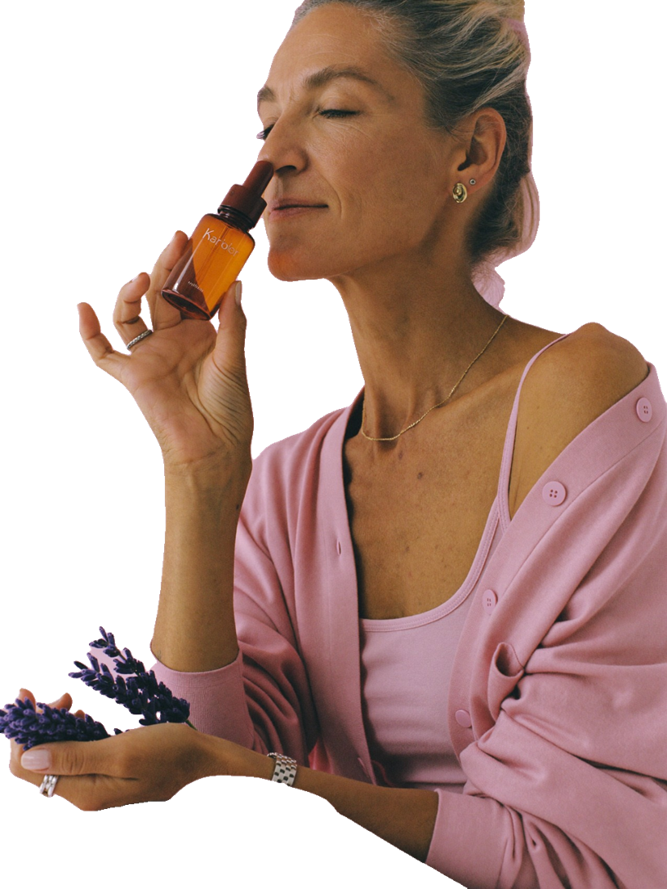

Corazón acelerado, nudo en el estómago, pensamientos que no paran. No tienes que «aguantar». Empieza por una de estas.
Escribe qué sientes y cuándo. Nombrar la emoción le baja el volumen y te da datos para tu consulta.
La terapia cognitivo-conductual y otras terapias psicológicas son el primer tratamiento para la depresión, también en línea o con apps guiadas.
Ayuda a calmar el momento de ansiedad. Ojo: no está recomendada para cortar los sofocos.
Una caminata corta ya cuenta. La OMS lo incluye entre los consejos de autocuidado para el ánimo.
Habla con alguien de confianza y no dejes las actividades que te gustaban. El aislamiento alimenta la ansiedad.
Inhala por la nariz contando 4, exhala por la boca contando 6. Repite durante 3 minutos.
Ejercicio sugerido por el equipo editorial.
